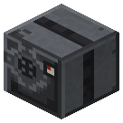
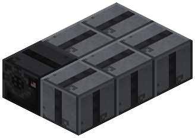
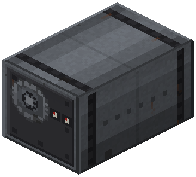

Реактор высокого давления


Всё, что паровой реактор, втрое быстрее.
Сосуд (A24): машина — узел лежачего сосуда 2x2x3. Ставь узел лицом к себе — это левый нижний блок торца; ещё 11 корпуса реактора ВД (4 из 6 пластин легированной стали + стальной пластины + 2 шлаковаты) — на 1 вправо, на 1 вверх и на 3 вглубь. Без сосуда узел стоит (Waila: «сосуд не собран»), ничего не тратит. Собранный гонит до 4 рецептов разом — сколько хватает сырья, катализатора и места на выходе: пар и выход ×4, время то же. Трубы и воронки — к торцам (любой из 8 блоков переднего или заднего торца), только через торцевую грань; бока и крыша глухие. Клик по корпусу — как по узлу. Порядок постановки любой.
Параметры
| Эпоха | 4 — Нефть и электричество в масштабе |
|---|---|
| Многоблок | нет |
| Привод | пар |
| Баки, mB | 16000, 16000, 16000, 16000 |
| что делает | все рецепты реактора ×3 + Оствальд, крекинг, гидрогенизация (60 рецептов) |
| энергия на входе | пар |
| из чего | химреактор, блок легированной стали, жидкостная топка RC, шлаковата, платина, монель, чертёж; + 11 корпусов реактора ВД (A24) |
Кто кормит
- IC2:itemHarz ← Химический реактор
- dustCopper ← Химический реактор
- Аммиачная селитра ← Химический реактор
- Ацетат кальция ← Химический реактор
- Мел ← Химический реактор, Рудная толчея
- Нафталин ← Атмосферная колонна (печь Шухова)
- Нитроцеллюлоза ← Химический реактор
- Канифоль ← Химический реактор
- Жёлтый кек (диуранат аммония) ← Химический реактор
- Уксусная кислота ← Кирпичная реторта
- Ацетон ← Химический реактор
- Раствор сульфата алюминия ← Химический реактор
- Аммиак ← Химический реактор
- Царская водка ← Смеситель
- bioethanol ← Выпарной аппарат
- creosote ← Коксовая камера, Пиролизная печь
- Формальдегид (формалин) ← Химический реактор
- fuel ← Химический реактор
- Водород ← Химический реактор
- Щёлок ← Зольный чан
- Метанол (древесный спирт) ← Химический реактор
- Нитрующая смесь ← Смеситель
- Нефтяной газ ← Нефтяная скважина
- Азотная кислота ← Кирпичная реторта
- Азот ← Воздухоразделительная установка Линде, Химический реактор
- oil ← Нефтяная скважина
- Фенол (карболовая кислота) ← Химический реактор
- Жижка (древесный уксус) ← Пиролизная печь
- steam ← Парогенератор АЭС
- Серная кислота ← Контактный аппарат, Свинцовая камера
- syngas ← Химический реактор
- Толуол ← Химический реактор
- Скипидар ← Химический реактор
- Раствор уранилсульфата ← Химический реактор
- water ← Артезианская скважина
Кого кормит
- IC2:itemHarz → Паровой автоклав, Химический реактор
- dustCopper → Электролизная ванна, Химический реактор, Тигельная печь
- dustSaltpeter → Свинцовая камера, Кирпичная реторта
- dustSulfur → Электролизная ванна, Паровой автоклав, Конструкторское бюро, Контактный аппарат, Свинцовая камера
- Глинозём (оксид алюминия) → Электролизная ванна
- Аммиачная селитра → Химический реактор
- Ацетат кальция → Химический реактор, Кирпичная реторта
- Мел → Химический реактор
- Нитроцеллюлоза → Химический реактор
- Бездымный порох → Патронный пресс
- Канифоль → Химический реактор
- Диоксид урана (природный) → Конструкторское бюро, Калютрон
- Ацетон → Химический реактор
- Раствор сульфата алюминия → Химический реактор
- Аммиак → Химический реактор
- Формальдегид (формалин) → Паровой автоклав, Химический реактор
- fuel → Химический реактор
- Водород → Химический реактор
- Метанол (древесный спирт) → Химический реактор, Смеситель
- Азотная кислота → Химический реактор, Смеситель
- Азот → Химический реактор
- oil → Атмосферная колонна (печь Шухова)
- Фенол (карболовая кислота) → Паровой автоклав, Химический реактор
- syngas → Химический реактор
- Толуол → Химический реактор
- Скипидар → Паровой автоклав, Химический реактор
- Раствор уранилнитрата → Химический реактор
- Раствор уранилсульфата → Химический реактор
Как устроено (из кода)
Реактор высокого давления: стальной корпус, платиновая сетка. Все рецепты парового реактора втрое быстрее при том же расходе пара, плюс процесс Оствальда (азотная кислота из аммиака). A24: узел своего сосуда (корпус hp_reactor_shell - легированная сталь); партия x4, как у химреактора.
Сборка
Без сосуда узел стоит. Собранный гонит до 4 рецептов разом: пар и выход xN, время то же.

Узел — реактор высокого давления: ставь лицом к себе. Это левый нижний блок торца.

Нижний ряд корпусов: на 1 вправо и на 3 вглубь (5 блоков).

Верхний ряд — ещё 6 корпусов. Сосуд 2x2x3 собран: торец оживает. Трубы и воронки — к торцам, бока и крыша глухие.


Бледное — поставлено на прошлых шагах.